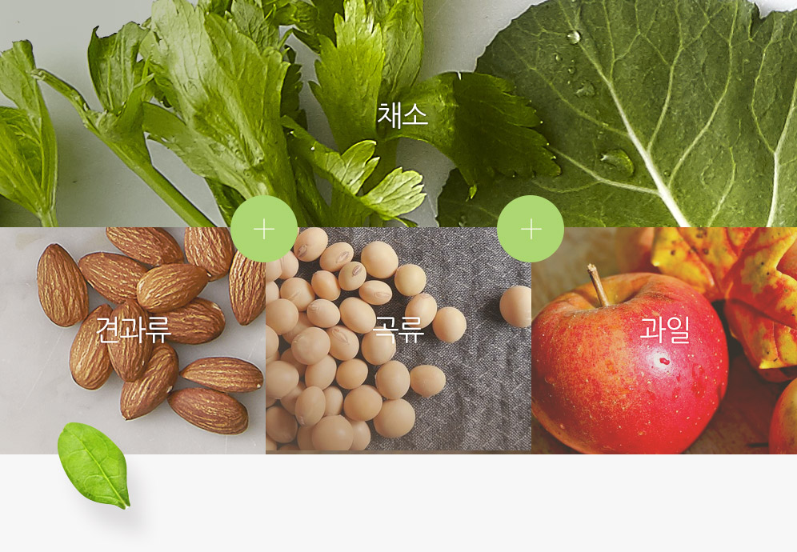

01
채소 녹즙과 과일 주스를
한 잔에 담은 혼합주스
휴롬주스는 몸에 좋은 다양한 채소와 맛있는 과일을 쉽게 혼합할 수 있어
한 잔으로 간편하고 균형있게 영양을 챙길 수 있습니다.
02
신선한 재료를 직접 골라 한 잔 한 잔
정성을 다해 만든 홈메이드 주스
휴롬주스는 대량 생산한 주스와 달리 한 잔 한 잔 정성을 담아낸 홈메이드 주스로,
개인별 건강을 고려하여 직접 신선한 재료를 골라 만든 맞춤주스입니다.
또한 기호에 따라 채소와 과일 외에
단백질이 풍부한 곡류, 두뇌 발달에 좋은 견과류를 활용할 수도 있습니다.
휴롬은 다양한 건강 레시피로 활용 가능합니다.

03
효소가 살아있는 생 주스
열을 가하지 않고 자연그대로 즉석에서 지그시 눌러 짜 생명 유지에 필수인 '효소'가 살아있는 주스입니다.
휴롬주스는 가공주스와 달리 소화 효소가 살아있어, 음식을 쉽게 분해시켜 소화를 도와줍니다.
실제 실험을 통해서도 효소가 살아있는 휴롬주스를 증명할 수 있습니다.
닭고기 효소 분해 실험
효소가 없는 가공주스
닭고기가 형태의 변화 없이 그대로인 것은
효소가 없어 음식을 소화시키지 못하는 것을
보여줍니다.
VS
효소가 살아있는 휴롬주스
닭고기가 분해되어 형태가 변화하는 것은
몸에 들어온 음식을 분해해 영양이 흡수 되게 하는 효소의 소화 작용을 보여줍니다.
휴롬 주스의 특징
시판주스
시중의 농축주스는 많은 첨가물이 들어가 있습니다.
타 착즙주스
타 착즙주스는 유통과정을 위한 살균과정에 의해 영양소가 파괴됩니다.
고속주스기로 만든 주스
가정에서 쓰는 고속 주스기로 갈아 만든 주스는 색이 변질되고 층 분리가 심합니다.
공기가 다량으로 유입되고 세포벽이 파괴된 상태
영양소가 파괴된 주스
고속믹서로 만든 사과주스
고속믹서로 갈아 만든주스는 거친 질감 떄문에 목 넘김이 불편합니다.
고속 믹서는 고속 회전하는 금속칼날로 인해 다량의 공기가 유입된 상태
마시기 불편한 주스
휴롬주스
휴롬주스는 아무런 첨가물 없이 오직! 자연 그대로의 영양만 담겨있습니다.
휴롬주스
휴롬주스는 자연 그대로의 색과 맛, 영양을 그대로 유지합니다.
휴롬주스기로 만든 주스
휴롬주스는 자연 그대로의 색과 맛, 영양을 그대로 유지합니다.
자연 그대로의 토마토 세포처럼 세포벽 손상이 최소화
영양소가 남아있는 주스
휴롬주스기로 만든 사과주스
휴롬주스기로 만든 주스는 재료 본연의 색을 유지하여 맑고 마시기 편합니다.
사과자연의 색과 영양이 그대로 유지됨
마시기 편한 주스
04
하루 한 잔 휴롬주스로
건강한 습관을 만들어 보세요
채소, 과일이 건강에 좋다는 것은 알고 있지만, 자주 먹지 않으면 아무 소용이 없습니다.
채소와 과일을 가장 손쉽게 먹을 수있는 하루 한 잔 휴롬주스로 건강한 습관을 만들어보세요.
-
어린이
잘못된 식습관으로
채소를 잘 먹지 않는 어린이 -
직장인
바쁜 일상에서 채소 과일을
먹기 힘든 직장인 -
할머니, 할아버지
채소 과일을 씹기 힘든
할머니, 할아버지